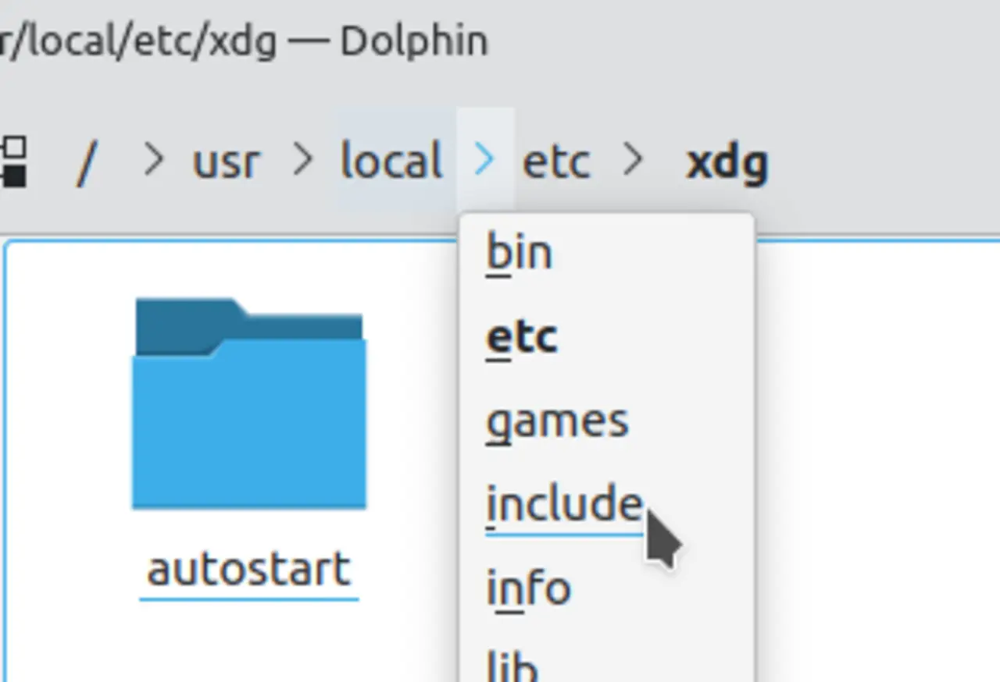

Short answer
A breadcrumb trail is the visible list of links from the current page back to its section and the home page.
People use it to move up. Crawlers use it as another set of internal links, which matters when the main navigation is a script menu that does not exist in the HTML. The trail should match the architecture you intend, not every folder in the URL. This is separate from breadcrumb markup, which only repeats the trail if you choose to add it.
Definition
The demonstration image shows a simple trail. A trail that includes filters, session parameters, or duplicate category names teaches the wrong map. Each crumb except the current page should be an anchor to the canonical URL of that level. The current page can be plain text so it does not link to itself.
How the structure carries discovery
Render the trail as HTML anchors to canonical section URLs, and keep filters out of the crumbs.
If the only way to see the trail is after JavaScript runs, the raw HTML has lost that path. Put the trail in the server HTML. A mismatch between the trail and the main taxonomy is an architecture bug: two maps of the same site. Pick one.

What to check
- Crumbs as anchors except the current page
- Canonical section URLs, not filter URLs
- The trail present in raw HTML
- One taxonomy, not a second map from campaign folders
- One product URL checked in view-source
A practical example
A product under “Actuators” shows a trail Home / Shop / Sale / Actuator because the URL was generated from a campaign folder. The repair uses Home / Products / Actuators / the product, with anchors, in the HTML. The campaign can be a banner. It is not the parent in the architecture.
What this does not claim
A breadcrumb trail does not guarantee rankings or citations.
Where Mika Visibility files this
Mika Visibility reads architecture as SEO Health: whether important templates sit on a path from hubs the crawler can follow. Depth and orphans are structure. Uncovered buyer questions are SEO Growth. A tidy tree does not guarantee that a page is easy to quote, which is a GEO quality, not a promise of citation.
The demonstration shows a trail of links so the article can insist on anchors rather than on a result layout.
FAQ
What is a breadcrumb trail?
A breadcrumb trail is the visible list of links from the current page back to its section and the home page.
What should the crumbs link to?
Render the trail as HTML anchors to canonical section URLs, and keep filters out of the crumbs.
Does a trail guarantee rankings?
A breadcrumb trail does not guarantee rankings or citations.
Next step
Run a structured SEO + GEO audit to see health findings, growth gaps, and a blueprint you can act on.
Clearer entities, answers, evidence, and context make pages easier to understand and reference. Results in any answer product are not guaranteed.